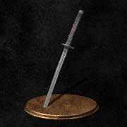

<!DOCTYPE html>
<html lang="en">
<head>
    <meta charset="UTF-8">
    <meta http-equiv="x-UA-Compatible" content="IE=edge">
    <meta name="viewport" content="width=device-width, initial-scale=1.0">
    <link rel="stylesheet" type="text/css" href="style1.css">
    <title>All-Souls Info</title>
</head>
</html>

<body class="body1">
    <header>
        <nav>
            <ul>
                <div>
                <table class="ans">
                    <tr class="ans">
                        <div><br><br><br>
                            <td><li><a class="on" href="#Inicio.html">Inicio</a> <a class="on" href="#Contacto.html">Contacto</a> <a href="#Proyectos.html">Proyectos</a> <a href="#Sobre mi.html">Sobre mi</a> </li></td>
                        </div>
                    </tr>
                </table>
                </div>
            </ul>
        </nav>
    </header>
</body><br>
<body class="body2">
    <h1 class="art" id="Inicio.html">Bienvenido a las tierras lejanas...</h1>
    <h2 class="cau">Te animas a jugarlos?</h2>
    <p><strong> Los Souls</strong>, considerados de los videojuegos que requieren mayor habilidad para vencer a los enemigos y finalizarlo.
    Al comienzo deberas elegir tu clase. Asi como en demas videojuegos, como Skyrim, te dan la posibilidad de escoger a la clase
    que mas te guste y se adapte a tu modo de juego.
    En el juego exploraras y encontraras items, armaduras, armas, magias y piromancias las cuales te ayudaran a ser mas poderoso.
    Pero no debes olvidar suber de nivel a tu personaje, hay una variedad de atributos que mejorar. Por un lado tienes la fuerza, resistencia,
    destreza... y por el otro tienes lo arcano, la fe, inteligencia.
    </p>
    <br><h4 class="lat">INDEX</h4>
</body>

<body class="body2">
    <table class="an">
        <tr class="an">
            <td class="an"><strong><a class="on" href="#Trilogia.html">1. Trilogia</a></strong></td>
        </tr>
        <tr class="an">
            <td class="an"><strong><a class="on" href="#Creador.html">2. Creador</a></strong></td>
        </tr>
        <tr class="an">
            <td class="an"><strong><a class="on" href="#Armas.html">3. Mejores Armas</a></strong></td>
        </tr>
        <tr class="an">
            <td class="an"><strong><a class="on" href="#DLCs.html">4. DLCs</a></strong></td>
        </tr>
        <tr class="an">
            <td class="an"><strong><a class="on" href="#Compatibilidad.html">5. Compatibilidad de Dark Souls I - II - III</a></strong></td>
        </tr>
    </table>
</body>

<body>
    <br><h2 id="Trilogia.html">1. La trilogia</h2>
    <p>Asi como otros juegos, este tiene una secuencia que lleva a dark souls a ser una trilogia.
    Al pasar de los años se fueron sacando una continuacion del primero, llamandose <strong>Dark Souls II</strong> y <strong>Dark Souls III</strong>.
    Comparandolos, el publico comenta que el <strong>Dark Souls III</strong> es el mejor de la trilogia debido a su nostalgia del I, y su historia. (Sin tomar en cuenta la dificultad claro).
    Algo a considerar, es que mucha gente suele llamar a otros titulos "<strong>Souls Like</strong>", pero no hay que confundirse, no se refieren al juego en si, sino a su terrible dificultad que requiere y suele ser comparada con otros titulos de igual dificultad.
    Algunos son de la misma franquicia, que se mencionan mas adelante, o otros que pertenecen a otras empresas, como "<strong>Cuphead</strong>" o "<strong>Hollow Knight</strong>" por la dificultad. Pero sin duda siguen siendo obras maestras.
    </p>
    

    <br><h2 id="Creador.html">2. Creador</h2>
    <p><strong>Dark Souls</strong> es una serie creada por Hidetaka Miyazaki de "FromSoftware" y publicada por "Bandai Namco Entertainment".
    Otros lanzamientos que hicieron y que tambien son excelentes juegos y con la misma y estresante dificultad, son "<strong>Sekiro Shadows Die Twice</strong>", 
    "<strong>Bloodborne</strong>", "<strong>Demons Souls</strong>" y el mas nuevo "<strong>Elden Ring</strong>". Todos a excepcion de "<strong>Sekiro</strong>" y "<strong>Elden ring</strong>" no llevan dlc.
    Sin embargo ya salio la fecha oficial del lanzamiento del dlc de "<strong>Elden Ring: Shadow of the Erdtree</strong>".
    </p>

    <br><h2 id="Armas.html">3. Mejores armas</h2>
    <p>Se mencionaran las 3 armas mas utilizadas por los jugadores de cada Saga (cuerpo a cuerpo). Cabe mencionar que no hay armas buenas ni malas, debido a que cada una se adapta al estilo de juego de cada uno y su build.</p>
    <h4 class="min" >Dark Souls I</h4>
    <div class="container">
        
        <div class="text-container">
            <p>1. Diente de dragon</p>
            <p>2. Uchigatana</p>
            <p>3. Espada recta dragon</p>
        </div>
    </div>

    <h4 class="min">Dark Souls II</h4>
    <div class="container">
        
        <div class="text-container">
            <p>1. Espada Draco</p>
            <p>2. Garrote</p>
            <p>3. Deriva Oscura</p>
        </div>
    </div>

    <h4 class="min">Dark Souls III</h4>
    <div class="container">
        
        <div class="text-container">
            <p>1. Espadon de luz de luna</p>
            <p>2. Espadas gemelas de mercenario</p>
            <p>3. Estoque de hielo</p>
        </div>
    </div>

    <br><h2 id="DLCs.html">4. DLCs</h2>
    <p>Cada "<strong>Dark Souls</strong>" tiene su o sus dlc, los cuales vienen incluidos si compras estos juegos en fisico. A continuacion mencionare los dlc mas famosos y epicos de esta trilogia.</p>
    <h4 class="sia">Dlc "Artorias"</h4>
    
    <p>Este dlc pertenece a "<strong>Dark Souls I</strong>" por lo tanto es el primero.</p>
    <p>En el dlc viajas a otra zona nueva, explorable y con nuevos jefes a quienes vencer. El ultimo es quien se llama Artorias. Este jefe es uno de los mas escepcionales de toda la saga.
    Debido a su diseño y patrones de ataque. es un jefe dificil para muchos pero es imposible odiarlo por lo bien echo que esta hecho el jefe.
    </p>
    <h4 class="sia">Dlc "La Ciudad Anillada"</h4>
    
    <p>Este dlc pertenece a "<strong>Dark Souls III</strong>".
    Este dlc es reconocido por ser muy "Troll" debido a que te encuentras una infinidad de trampas. Incluso hay una en la cual te lleva a uno de los jefes mas complicados y con mas vida de la saga.
    Este jefe se llama Midir, es un dragon con un patron de ataque simple y sin muchas complicaciones, pero la cantidad de vida que tiene es un verdadero reto.
    Al igual que el primer dlc mencionado, se añade una nueva zona explorable y con nuevos jefes.
    </p>

    <h4 class="sia">Dlc "Cenizas de Ariandel"</h4>
    
    <p>Este dlc pertenece igualmente a "<strong>Dark Souls III</strong>".
    Este dlc es famoso por el ultimo jefe de la zona explorable, y no me refiero a solo 1 jefe, sino 2 los cuales tienen sus propios patrones de ataque y puede ser muyyy tedioso vencerles.
    Te recomiendo invocar a algun jugador para que te ayude.
    Al igual que los otros dlcs, se añaden mas jefes y zonas con nuevos enemigos a quienes vencer.
    </p>

    <br><h2 id="Compatibilidad.html">5. Compatibilidad de Dark Souls I-II-III</h2>
    <p>Esta trilogia es compatible con "Playstation", "Xbox" y PC.</p>
</body>

<body>
    <br><br><br><h1 class="quo" id="Contacto.html">Contacto</h1><br>
    <p>Correo electronico: ratonsitoperez123@hotmail.com</p>
    <p>Numero de contacto: +51 999111888</p>
    <H1 class="quo" id="Proyectos.html">Proyectos</H1><br>
    <p>La fecha en la que se publico esta pagina es el 29/05/2024</p>
    <p>EL objetivo de esta pagina es dar a conocer esta franquicia a traves de esta, permitiendo que todo publico tenga acceso a esta y conocer estos 3 clasicos y disfrutables juegos.</p>
    <p>En estos dias estoy pensando en un proximo proyecto en el cual se mostrara informacion acerca de los demas souls like que solo se llegan a mencionar en esta pagina mas no se explican a detalle</p>
    <h1 class="quo" id="Sobre mi.html">Sobre mi</h1><br>
    <p>Me llamo Santiago y soy un estudiante quien busca aprender sobre programacion y otros ambitos para expandir mi conocimiento.</p>
    <p>Como se habran dado cuenta, soy un fan de los souls. Son mis videojuegos favoritos, los cuales son sekiro, elden ring, los 3 dark souls, demons souls, bloodbornec.</p>
    <p>De por si me gustan los juegos que se consideran dificiles de superar como otros titulos que son cuphead o hollow knight. Pero no solo los completo, sino que tambien consigo todos sus trofeos relacionados. </p>
</body>